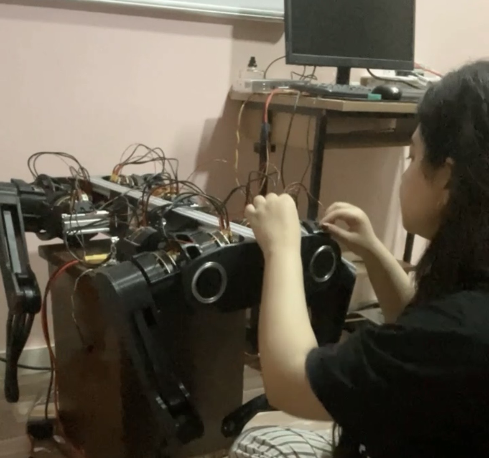
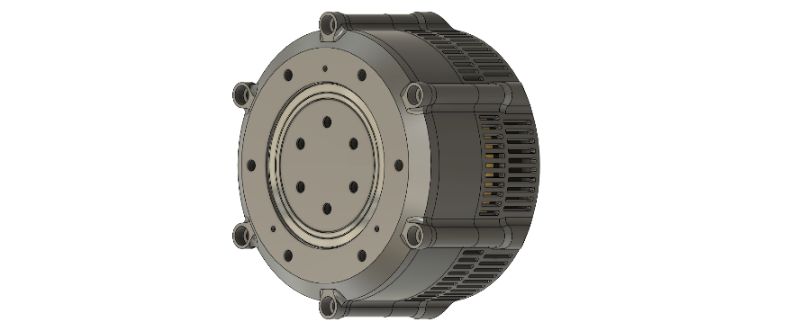
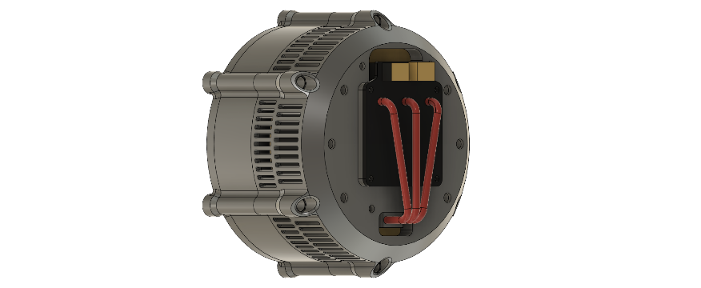
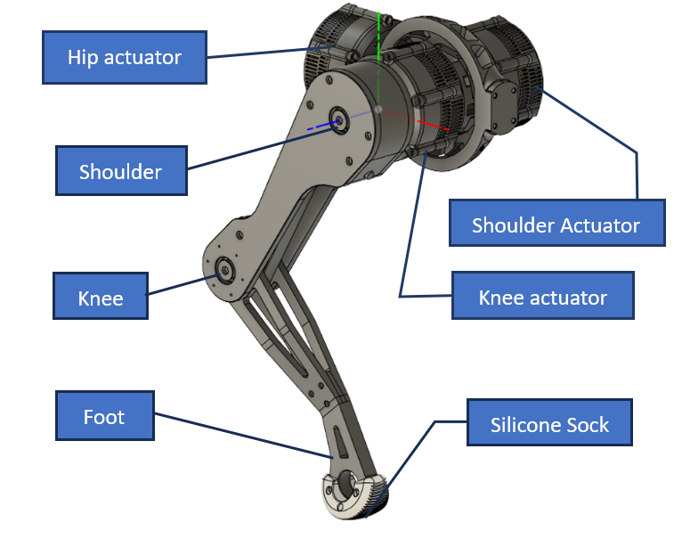
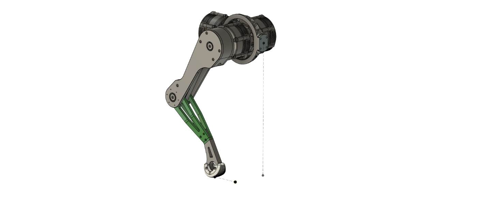
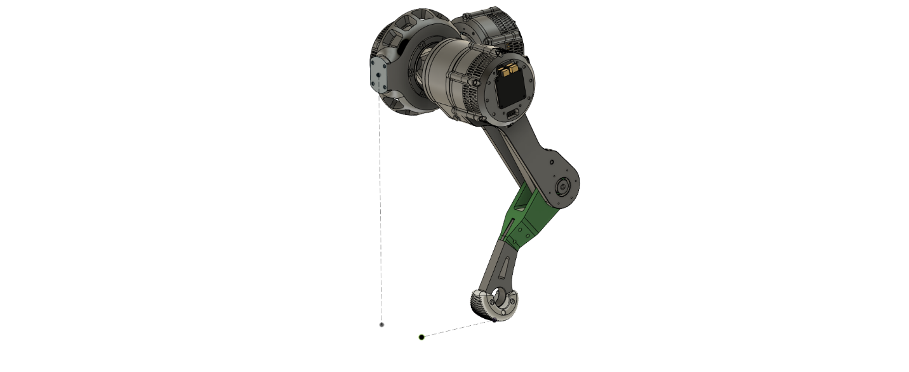

Schvaan
- Schvaan is a dynamic quadruped composed of 3D-printed parts (80%) and standard hardware (20%).
- 12 DOFs, each driven by a proprioceptive actuator.
- Capable of homing, standing, and walking with a trot gait.
Schvaan is a passion project that was born out of years long yearning to make a deep-dive into robotics. It is built of mostly 3d printed parts and some off-the-shelf hardware. It has 12 DOFs, each driven by a proprioceptive actuator (which is just a fancy way of saying that the actuator has self-contained sensing for torque and position).

The actuator was designed to use a generic 8308 BLDC motor, controlled by a FOC motor driver. I used the MJ bots motor driver because it had an integrated magnetic encoder for commutation and position sensing, and a phase current sensor for torque estimation. Additionally, I could chain multiple drivers because they use CAN for communication, and MJ bots also had an RPI 4 compatible CAN shield that made it much easier to manage multiple actuators
Proprioceptive Actuator


- 1:10 cycloidal gearbox
- Generic 8308 BLDC motor
- FOC-based driver with:
- Magnetic encoder for position/commutation
- Phase current sensing for torque estimation

3 DOFs
- Adduction-Abduction at hip (X-axis)
- Flexion-Extension at shoulder (Y-axis)
- Flexion-Extension at knee (Y-axis)
- Toothed belt actuator-knee transmission
- Silicone sock on foot for improved traction


3-DOF Leg: Problems & Solutions
- Redesigned tibia for increased rigidity
- Repositioned knee actuator for better cooling
- Reduced moment arm for hip actuator
Rigidity & Stability Improvements
- Simulation showed stable gait, but real gait was unstable
- Caused by assumptions of rigidity vs. actual flexibility
- Design changes improved real-world performance